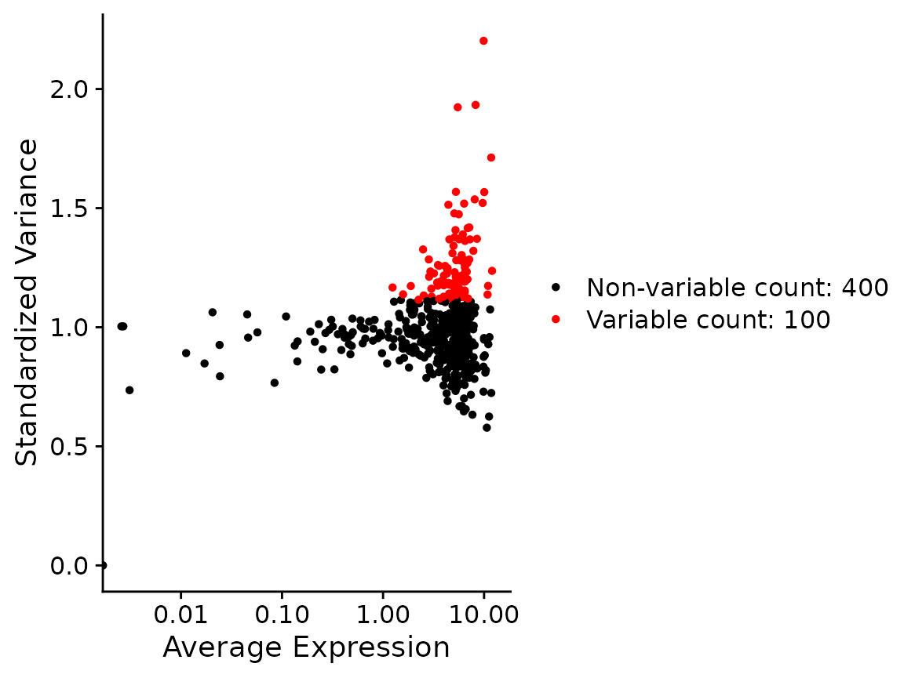

vignettes/articles/seurat_gene_expression.Rmd
seurat_gene_expression.RmdThis is the original content of the Seurat vignette, from before
correctEmbeddingsexisted.RunCanek()now corrects in PCA-embedding space by default, returning a"canek"reduction rather than a"Canek"assay — see Log-normalized data or SCTransform-normalized data for the current, default workflow. The gene-expression-space path shown below still works and is still supported, just no longer the default, so the oneRunCanek()call here has been pinned tocorrectEmbeddings = FALSEto keep this page runnable as originally written.
library(Canek)
library(Seurat)
#> Loading required package: SeuratObject
#> Loading required package: sp
#> 'SeuratObject' was built under R 4.6.0 but the current version is
#> 4.6.1; it is recomended that you reinstall 'SeuratObject' as the ABI
#> for R may have changed
#>
#> Attaching package: 'SeuratObject'
#> The following objects are masked from 'package:base':
#>
#> intersect, t
x <- lapply(names(SimBatches$batches), function(batch) {
CreateSeuratObject(SimBatches$batches[[batch]], project = batch)
})
#> Warning: Data is of class matrix. Coercing to dgCMatrix.
#> Warning: Data is of class matrix. Coercing to dgCMatrix.
x <- merge(x[[1]], x[[2]])
x[["cell_type"]] <- SimBatches$cell_types
x
#> An object of class Seurat
#> 500 features across 1579 samples within 1 assay
#> Active assay: RNA (500 features, 0 variable features)
#> 2 layers present: counts.B1, counts.B2
table(x$orig.ident)
#>
#> B1 B2
#> 631 948
x <- NormalizeData(x)
#> Normalizing layer: counts.B1
#> Normalizing layer: counts.B2
x <- FindVariableFeatures(x, nfeatures=100)
#> Finding variable features for layer counts.B1
#> Finding variable features for layer counts.B2
VariableFeaturePlot(x)
#> Warning in scale_x_log10(): log-10 transformation introduced
#> infinite values.
x <- ScaleData(x)
#> Centering and scaling data matrix
x <- RunPCA(x)
#> Warning in svd.function(A = t(x = object), nv = npcs, ...): You're computing
#> too large a percentage of total singular values, use a standard svd instead.
#> PC_ 1
#> Positive: Gene461, Gene118, Gene178, Gene492, Gene341, Gene389, Gene73, Gene136, Gene366, Gene362
#> Gene290, Gene311, Gene113, Gene127, Gene5, Gene416, Gene9, Gene234, Gene31, Gene245
#> Gene183, Gene228, Gene370, Gene239, Gene172, Gene162, Gene354, Gene165, Gene211, Gene303
#> Negative: Gene274, Gene373, Gene60, Gene285, Gene382, Gene281, Gene449, Gene229, Gene473, Gene50
#> Gene107, Gene484, Gene224, Gene349, Gene174, Gene489, Gene61, Gene327, Gene342, Gene1
#> Gene427, Gene193, Gene207, Gene471, Gene226, Gene3, Gene395, Gene17, Gene213, Gene4
#> PC_ 2
#> Positive: Gene17, Gene358, Gene4, Gene229, Gene74, Gene366, Gene296, Gene484, Gene213, Gene165
#> Gene386, Gene473, Gene94, Gene226, Gene369, Gene136, Gene185, Gene401, Gene389, Gene78
#> Gene492, Gene28, Gene285, Gene73, Gene290, Gene326, Gene311, Gene5, Gene255, Gene178
#> Negative: Gene322, Gene31, Gene211, Gene498, Gene223, Gene174, Gene297, Gene472, Gene341, Gene228
#> Gene25, Gene1, Gene461, Gene176, Gene9, Gene234, Gene489, Gene61, Gene220, Gene373
#> Gene427, Gene449, Gene382, Gene3, Gene57, Gene160, Gene477, Gene245, Gene281, Gene292
#> PC_ 3
#> Positive: Gene489, Gene303, Gene255, Gene449, Gene285, Gene239, Gene290, Gene61, Gene160, Gene178
#> Gene342, Gene427, Gene113, Gene57, Gene390, Gene213, Gene292, Gene73, Gene369, Gene432
#> Gene229, Gene495, Gene226, Gene348, Gene5, Gene28, Gene162, Gene22, Gene366, Gene297
#> Negative: Gene386, Gene484, Gene183, Gene327, Gene224, Gene60, Gene341, Gene1, Gene296, Gene401
#> Gene223, Gene107, Gene349, Gene185, Gene472, Gene274, Gene389, Gene228, Gene471, Gene305
#> Gene234, Gene211, Gene461, Gene395, Gene492, Gene220, Gene358, Gene31, Gene74, Gene193
#> PC_ 4
#> Positive: Gene94, Gene60, Gene178, Gene386, Gene228, Gene449, Gene274, Gene290, Gene395, Gene61
#> Gene461, Gene341, Gene255, Gene145, Gene327, Gene162, Gene223, Gene160, Gene489, Gene473
#> Gene303, Gene349, Gene285, Gene234, Gene245, Gene107, Gene74, Gene31, Gene172, Gene498
#> Negative: Gene427, Gene183, Gene322, Gene477, Gene311, Gene193, Gene57, Gene471, Gene3, Gene165
#> Gene281, Gene401, Gene296, Gene28, Gene472, Gene382, Gene484, Gene127, Gene22, Gene50
#> Gene492, Gene78, Gene432, Gene1, Gene185, Gene354, Gene373, Gene90, Gene25, Gene370
#> PC_ 5
#> Positive: Gene327, Gene107, Gene191, Gene341, Gene162, Gene74, Gene234, Gene160, Gene408, Gene477
#> Gene326, Gene220, Gene255, Gene305, Gene416, Gene349, Gene223, Gene224, Gene342, Gene290
#> Gene183, Gene352, Gene127, Gene50, Gene27, Gene370, Gene358, Gene328, Gene1, Gene4
#> Negative: Gene297, Gene245, Gene386, Gene193, Gene113, Gene471, Gene274, Gene165, Gene472, Gene207
#> Gene484, Gene311, Gene303, Gene178, Gene229, Gene73, Gene185, Gene489, Gene31, Gene239
#> Gene61, Gene228, Gene382, Gene292, Gene395, Gene401, Gene492, Gene461, Gene25, Gene348We pass the column containing the batch information.
x <- RunCanek(x, "orig.ident", correctEmbeddings = FALSE)
#> Warning in (function (A, nv = 5, nu = nv, maxit = 1000, work = nv + 7, reorth =
#> TRUE, : You're computing too large a percentage of total singular values, use a
#> standard svd instead.The features selected during integration are assigned as variable features.
head(VariableFeatures(x, assay="Canek"))
#> [1] "Gene348" "Gene322" "Gene57" "Gene461" "Gene61" "Gene145"We scale features and run PCA.
x <- ScaleData(x)
#> Centering and scaling data matrix
x <- RunPCA(x)
#> Warning in svd.function(A = t(x = object), nv = npcs, ...): You're computing
#> too large a percentage of total singular values, use a standard svd instead.
#> PC_ 1
#> Positive: Gene461, Gene118, Gene178, Gene113, Gene31, Gene73, Gene245, Gene9, Gene492, Gene322
#> Gene297, Gene303, Gene311, Gene239, Gene341, Gene211, Gene472, Gene136, Gene290, Gene362
#> Gene389, Gene127, Gene5, Gene228, Gene498, Gene416, Gene57, Gene366, Gene370, Gene234
#> Negative: Gene60, Gene274, Gene327, Gene484, Gene107, Gene373, Gene358, Gene285, Gene349, Gene224
#> Gene229, Gene473, Gene17, Gene4, Gene281, Gene382, Gene50, Gene449, Gene296, Gene386
#> Gene94, Gene74, Gene1, Gene305, Gene226, Gene213, Gene369, Gene342, Gene395, Gene145
#> PC_ 2
#> Positive: Gene223, Gene322, Gene31, Gene174, Gene341, Gene211, Gene498, Gene1, Gene472, Gene274
#> Gene228, Gene373, Gene60, Gene107, Gene327, Gene297, Gene224, Gene382, Gene349, Gene234
#> Gene25, Gene220, Gene449, Gene176, Gene281, Gene395, Gene61, Gene3, Gene461, Gene305
#> Negative: Gene17, Gene358, Gene229, Gene4, Gene366, Gene165, Gene74, Gene136, Gene213, Gene73
#> Gene178, Gene369, Gene296, Gene492, Gene226, Gene290, Gene311, Gene113, Gene473, Gene389
#> Gene94, Gene5, Gene28, Gene78, Gene303, Gene255, Gene239, Gene362, Gene127, Gene185
#> PC_ 3
#> Positive: Gene449, Gene489, Gene255, Gene290, Gene285, Gene160, Gene61, Gene178, Gene303, Gene94
#> Gene162, Gene342, Gene239, Gene60, Gene473, Gene228, Gene416, Gene213, Gene274, Gene292
#> Gene395, Gene495, Gene369, Gene145, Gene226, Gene352, Gene191, Gene390, Gene27, Gene408
#> Negative: Gene183, Gene484, Gene401, Gene471, Gene296, Gene472, Gene193, Gene311, Gene185, Gene386
#> Gene492, Gene165, Gene389, Gene322, Gene1, Gene427, Gene224, Gene3, Gene127, Gene477
#> Gene358, Gene382, Gene207, Gene354, Gene78, Gene370, Gene362, Gene245, Gene211, Gene57
#> PC_ 4
#> Positive: Gene386, Gene274, Gene178, Gene228, Gene60, Gene94, Gene461, Gene395, Gene245, Gene484
#> Gene297, Gene113, Gene145, Gene341, Gene185, Gene473, Gene31, Gene73, Gene207, Gene61
#> Gene118, Gene389, Gene472, Gene223, Gene449, Gene492, Gene362, Gene172, Gene349, Gene471
#> Negative: Gene427, Gene477, Gene322, Gene281, Gene57, Gene183, Gene50, Gene28, Gene342, Gene22
#> Gene3, Gene160, Gene352, Gene285, Gene220, Gene191, Gene432, Gene408, Gene373, Gene255
#> Gene326, Gene416, Gene213, Gene78, Gene382, Gene127, Gene305, Gene390, Gene369, Gene90
#> PC_ 5
#> Positive: Gene224, Gene495, Gene473, Gene78, Gene191, Gene228, Gene432, Gene127, Gene94, Gene223
#> Gene342, Gene352, Gene292, Gene416, Gene22, Gene50, Gene328, Gene401, Gene386, Gene172
#> Gene9, Gene220, Gene395, Gene61, Gene28, Gene472, Gene492, Gene471, Gene3, Gene326
#> Negative: Gene281, Gene427, Gene178, Gene358, Gene449, Gene322, Gene145, Gene477, Gene484, Gene183
#> Gene290, Gene489, Gene274, Gene354, Gene461, Gene57, Gene25, Gene349, Gene207, Gene285
#> Gene229, Gene327, Gene255, Gene31, Gene341, Gene4, Gene373, Gene311, Gene245, Gene185